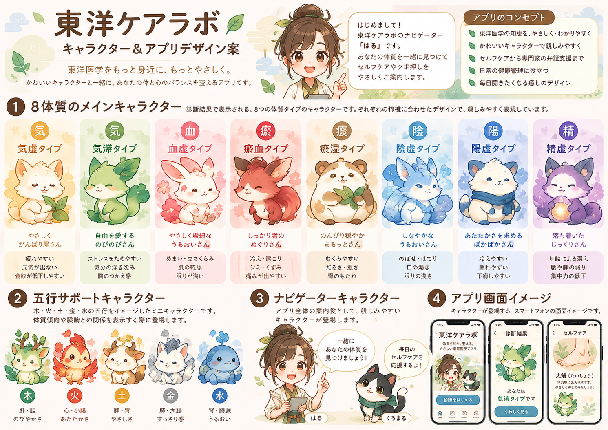

東洋医学を、毎日の暮らしに。
いまのあなたの
体質傾向を知る
16の質問から、東洋医学の考え方に基づく体質の傾向を整理します。ツボ押しや生活のヒントも紹介します。
これは医学的な診断ではありません。急な症状、強い痛み、息苦しさ、意識の異常などがある場合は、このチェックを使わず医療機関へ相談してください。

利用モード
セルフケアと体質傾向をやさしく紹介します。
8つの体質キャラクター
所要時間の目安：2〜4分。回答は端末内で計算し、サーバーに保存しません。
アプリへのご意見
任意のご感想だけを収集します。氏名や症状などの個人情報は書かないでください。Netlify Formsを使用し、改善目的で保存します。